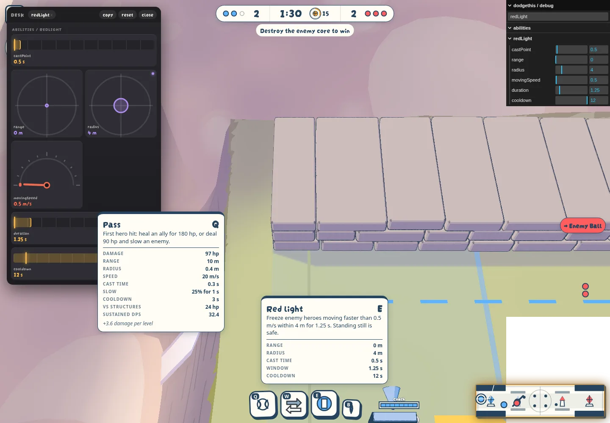

Ability cards from live templates
To review · 2026-10-22 · thr_ikhu29ci7k
Direct match setup with Coach. Hovered Pass, pinned a copy of that tooltip for comparison, then hovered Red light. The desk changed Red light radius from 5 m to 4 m; the open sentence and Radius row both followed. Existing wording remains, with consistent units. No gameplay hooks changed.

Kit sheet, first lines
bun run kit prints every registered hero, drafts included. There are eight in this checkout, not nine.
MOBA kits · 8 heroes · level 1 · live tune
Hero | Slot | Ability | Cooldown | Key numbers
Fletcher | basic | Basic attack | — | damage 90 hp · rate 1 /s · windup 0.15 s · backswing 0.25 s · speed 24 m/s · radius 0.12 m · critEvery 5 · critMultiplier ×1.2 · range 5.5 m
Fletcher | slot1 | Loose | 4 s | damage 230 hp · castPoint 0.3 s · range 11 m · speed 20 m/s · radius 0.3 m
Fletcher | slot2 | Rain | 6 s | damage 180 hp · castPoint 0 s · range 7 m · radius 2.5 m · delay 0.7 s · slow 30% · duration 1.5 s
Fletcher | slot3 | Vault | 3 s | castPoint 0 s · range 4 m · time 0.18 s
Fletcher | trait | Momentum | — | Loose hitting a hero cuts Vault's cooldown by 2 s.Checks: 30 existing tests passed; lint and formatting passed. A deliberately unresolved Red light token made the reference check exit with failure. No simulation changes or new unit tests.